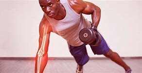

Beneficios del Deporte

Con el paso de los años, seguir practicando ejercicio disminuye la pérdida de densidad ósea relacionada con la edad. Hacer actividades de fortalecimiento muscular permite aumentar o mantener la masa muscular.